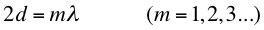
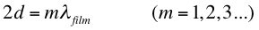
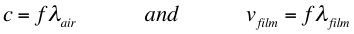
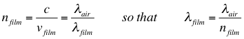
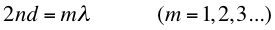
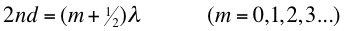
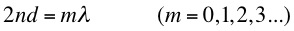
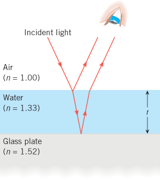

Assuming a monochromatic source and normal incidence, we can expect that the two reflected rays will interfere constructively if their path difference is an integer multiple of wavelengths,

where d is the thickness of the film.
The path difference 2d is measured inside the film, but the wavelength is the wavelength in air... Therefore the condition for a maximum should be,
However, we know that,

and using the definition of refractive index,

This means the condition for constructive interference can be written,

where n is the refractive index of the film and λ is the wavelength of the light in air.
This result implies that when the film becomes very thin (d approximately zero), we should expect constructive interference (equivalent to m = 0). That is, just before a soap bubble bursts, as its thickness gets smaller and smaller, we should expect the swirling colours to become brighter. Actually the opposite is observed - bubbles becomes dull just before they burst - in other words destructive interference must be taking place.
The explanation to this apparent conflict is that the first reflected ray (green in the above diagram) is phase changed by 1800 by the act of reflection. In the above diagram, only this ray undergoes such a phase change. In fact the rule (which can be verified theoretically from Maxwell's equations) is,
"A 1800 phase change on reflection occurs when light incident from a less dense medium (smaller n) reflects off the boundary with a more dense (larger n) medium"
Reflection from more dense to less dense (large n to small n) causes no phase change and transmitted rays never undergo phase changes.
Incorporating this phase change leads to the condition for constructive interference,

and for destructive interference,

The second correction applies specifically to the air-soap-air configuration, or more generally to the circumstance of a film with greater refractive index than the media on either side. This correction may not be needed for other thin film configurations; for example, a film of water on a glass surface, shown at right. In this case, since nair < nwater < nglass , there is a 1800 phase change for the reflected rays from both the air-water and water-glass interface. That is the condition for constructive interference reverts to
and for destructive interference,
Dr. C. L. Davis
Physics Department
University of Louisville
email: c.l.davis@louisville.edu